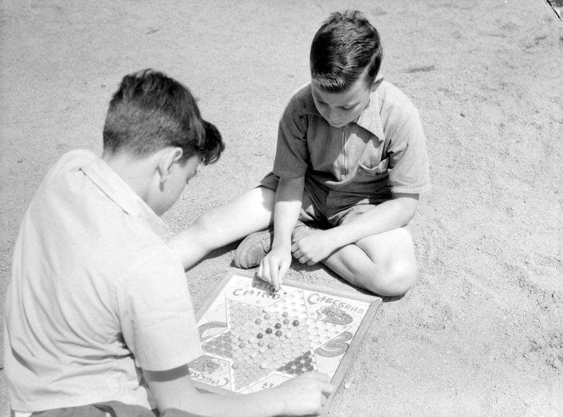

Home
Китайские шашки
Несмотря на название, с шашками игра не имеет почти ничего общего и к Китаю отношения не имеет. Китайские шашки
— упрощенный вариант игры Халма, которая была изобретена в 1883—1884 годах в США. Современный вид игры создан в 1892 году в Германии под названием «Stern-Halma»
(то есть Халма в виде звезды). Название «Китайские шашки» придумали в 1928 году Билл и Джек Пресмани, американские предприниматели.
В китайские шашки играют на поле, имеющем форму правильной шестиконечной звезды. Если игроков двое, каждый получает по 15 камней-шашек,
если трое и больше — то по 10. Во время игры все шашки остаются на поле — бить в этой игре нельзя.
Игроки ходят по очереди. За один ход можно либо передвинуть свою шашку на соседнее поле, либо прыгнуть к ней через одну свою или чужую шашку. Прыгать можно сколько угодно, но нельзя совмещать прыжки с передвижением на соседнее поле.
Цель игры — переставить все свои шашки в противоположный луч звезды первым. Если двое игроков сделали это за одинаковое количество ходов, засчитывается ничейный результат.
